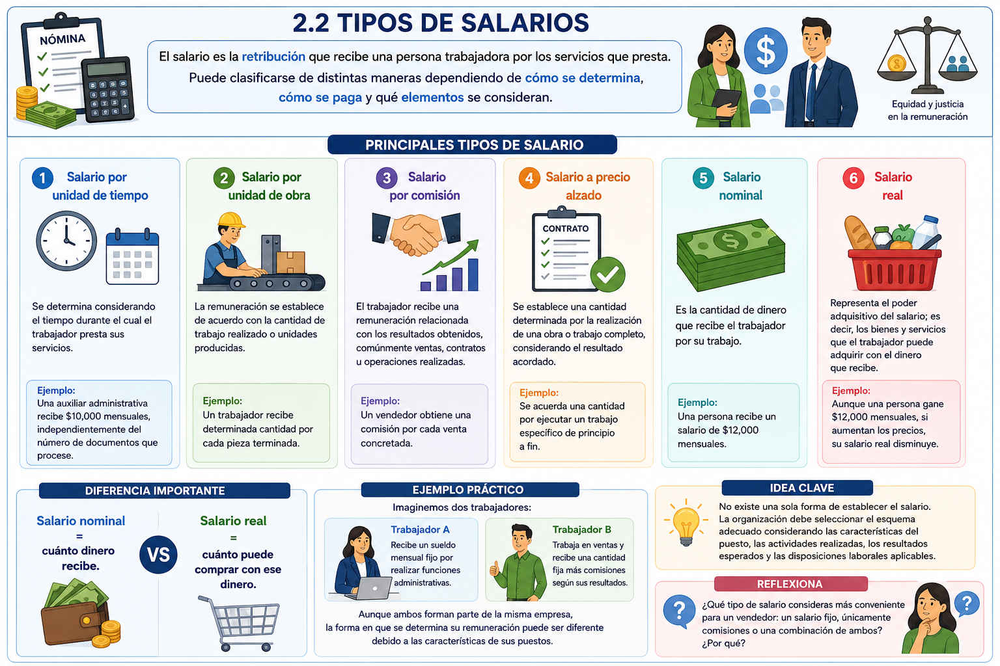
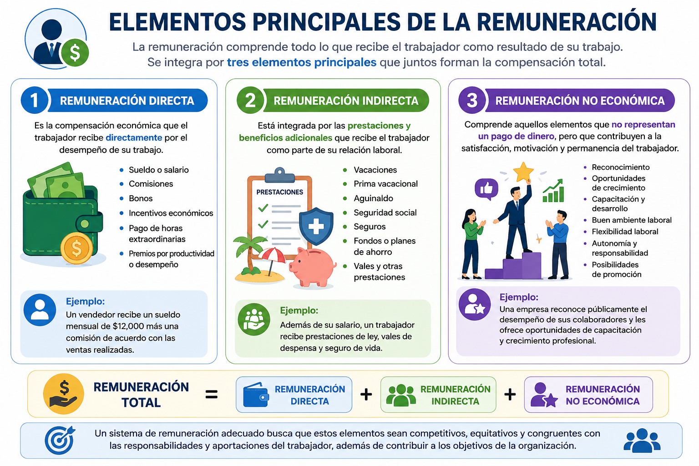
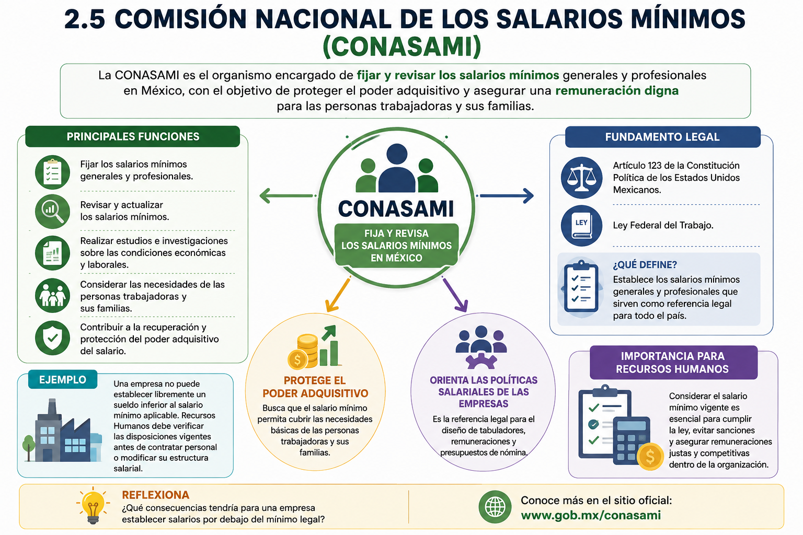
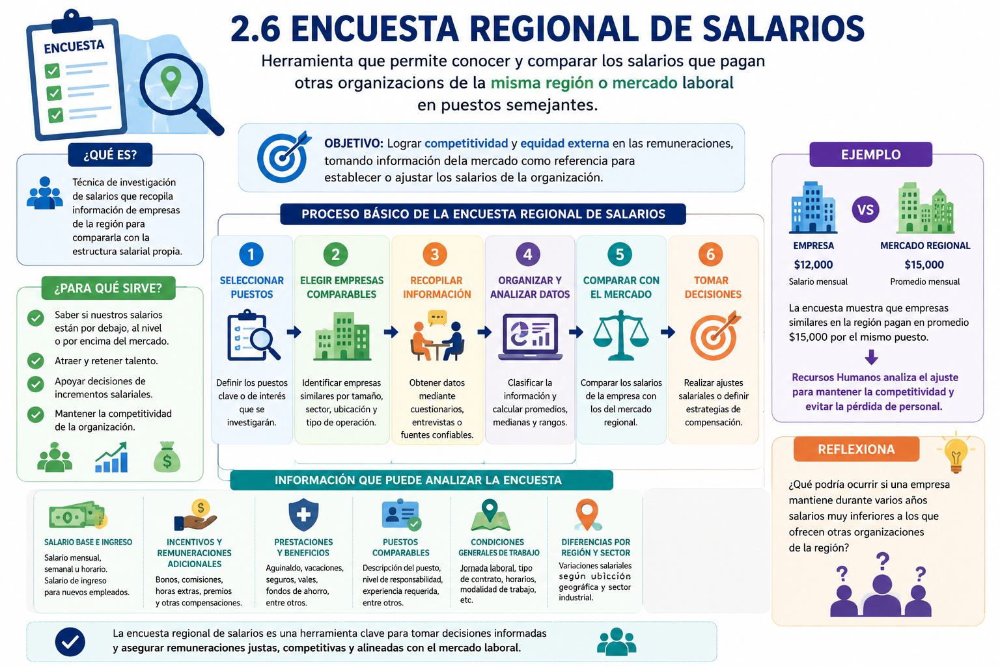
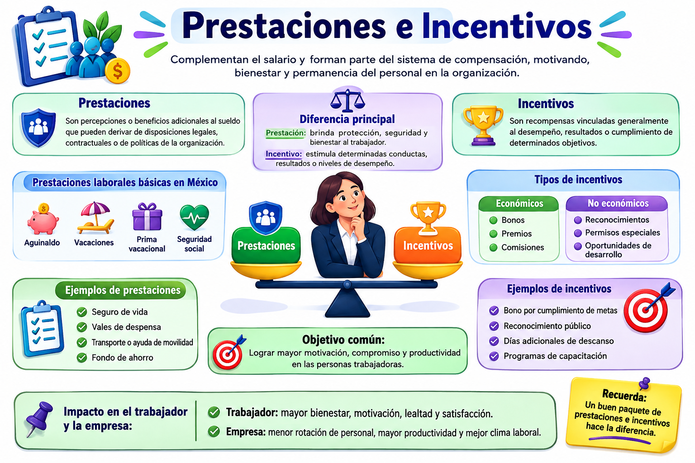

Unidad 2 – Sistema de administración de sueldos y salarios
Unidad 2 – Sistema de administración de sueldos y salarios
Introducción de la unidad
La administración de sueldos y salarios es una función fundamental de Recursos Humanos, ya que permite establecer una remuneración adecuada para los trabajadores de acuerdo con las características del puesto, sus responsabilidades, el desempeño y las condiciones del mercado laboral.
Un sistema de remuneración correctamente diseñado busca lograr un equilibrio entre la equidad interna, la competitividad externa, el cumplimiento de las disposiciones legales y la capacidad económica de la organización.
A lo largo de esta unidad se analizarán los diferentes tipos de salarios, los factores que intervienen en su determinación, los elementos de la remuneración, el salario mínimo, las encuestas salariales, así como las prestaciones e incentivos.
Objetivo de la unidad
Comprender los principios y elementos que integran un sistema de administración de sueldos y salarios, identificando los factores legales, económicos y administrativos que intervienen en la determinación de una remuneración justa y competitiva.
Al finalizar la unidad, el alumno será capaz de:
- Diferenciar los principales tipos de salario.
- Identificar los elementos que conforman la remuneración.
- Comprender los aspectos que influyen en la determinación salarial.
- Reconocer la función del salario mínimo y de las encuestas salariales.
- Analizar la importancia de las prestaciones e incentivos.
TEMARIO UNIDAD 2
TEMARIO UNIDAD 2
2. SISTEMA DE ADMINISTRACIÓN DE SUELDOS Y SALARIOS
2.1 Definición
2.2 Tipos de salarios
2.3 Aspectos jurídicos, económico, moral y administrativo
2.4 Elementos principales de la remuneración
2.5 Comisión nacional de salarios mínimos
2.6 Encuesta regional de salarios
2.7 Prestaciones e incentivos
2.1 Definición
2.1 Definición
La administración de sueldos y salarios es el conjunto de políticas, procedimientos y técnicas que utiliza una organización para determinar y administrar la remuneración que reciben los trabajadores por el trabajo que realizan.
Su propósito es establecer una estructura salarial justa, equitativa y competitiva, considerando el valor y las responsabilidades de cada puesto, las competencias requeridas, el desempeño del trabajador, las condiciones del mercado laboral y la capacidad económica de la organización.
Conceptos importantes
Sueldo: remuneración que normalmente se establece por un periodo determinado, por ejemplo, semanal, quincenal o mensual.
Salario: retribución que recibe el trabajador por la prestación de sus servicios. Puede determinarse considerando tiempo trabajado, actividades realizadas u otros criterios establecidos en la relación laboral.
Remuneración: concepto más amplio que comprende el salario y otros elementos que puede recibir el trabajador como parte de su compensación, tales como prestaciones, incentivos, bonos o comisiones.
¿Qué busca una adecuada administración salarial?
Busca principalmente:
- Mantener equidad interna entre los diferentes puestos.
- Ofrecer remuneraciones competitivas respecto al mercado laboral.
- Cumplir con las disposiciones legales.
- Reconocer las responsabilidades y características de los puestos.
- Contribuir a atraer y conservar personal competente.
- Favorecer la motivación y el desempeño de los trabajadores.
- Mantener los costos laborales dentro de las posibilidades de la organización.
Ejemplo práctico
Una empresa tiene dos puestos: auxiliar administrativo y jefe administrativo. Aunque ambos trabajan en la misma área, el jefe tiene mayor responsabilidad, toma decisiones y supervisa personal.
Por ello, la empresa no debería establecer los salarios únicamente por las horas trabajadas. Debe analizar las funciones, responsabilidades y nivel de exigencia de cada puesto para determinar una remuneración adecuada.
Idea clave
Administrar sueldos y salarios no significa solamente decidir cuánto pagar, sino establecer criterios para determinar por qué se paga una cantidad y procurar que esa remuneración sea justa y competitiva.
Reflexiona
¿Qué podría ocurrir en una empresa si dos trabajadores con responsabilidades muy diferentes reciben exactamente el mismo salario?
2.2 Tipos de salarios
2.2 Tipos de salarios
El salario es la retribución que recibe una persona trabajadora por los servicios que presta. En la administración de Recursos Humanos es importante reconocer que el salario puede clasificarse de distintas maneras dependiendo de cómo se determina, cómo se paga y qué elementos se consideran.
Principales tipos de salario
1. Salario por unidad de tiempo
Se determina considerando el tiempo durante el cual el trabajador presta sus servicios. Puede establecerse por hora, día, semana, quincena o mes.
Ejemplo: una auxiliar administrativa recibe $10,000 mensuales, independientemente del número de documentos que procese.
2. Salario por unidad de obra
La remuneración se establece de acuerdo con la cantidad de trabajo realizado o unidades producidas, y no solamente por el tiempo empleado.
Ejemplo: un trabajador recibe determinada cantidad por cada pieza terminada.
3. Salario por comisión
El trabajador recibe una remuneración relacionada con los resultados obtenidos, comúnmente ventas, contratos u operaciones realizadas.
Ejemplo: un vendedor obtiene una comisión por cada venta concretada.
4. Salario a precio alzado
Se establece una cantidad determinada por la realización de una obra o trabajo completo, considerando el resultado acordado.
Ejemplo: se acuerda una cantidad por ejecutar un trabajo específico de principio a fin.
5. Salario nominal
Es la cantidad de dinero que recibe el trabajador por su trabajo.
Ejemplo: una persona recibe un salario de $12,000 mensuales.
6. Salario real
Representa el poder adquisitivo del salario; es decir, los bienes y servicios que el trabajador puede adquirir con el dinero que recibe.
Ejemplo: aunque una persona gane $12,000 mensuales, si aumentan considerablemente los precios de alimentos, transporte y vivienda, su salario real disminuye.
Diferencia importante
Salario nominal = cuánto dinero recibe.
Salario real = cuánto puede comprar con ese dinero.
Esta diferencia permite que los alumnos comprendan por qué un aumento de sueldo no necesariamente significa una mejora equivalente en el nivel de vida.
Ejemplo práctico
Imaginemos dos trabajadores:
Trabajador A: recibe un sueldo mensual fijo por realizar funciones administrativas.
Trabajador B: trabaja en ventas y recibe una cantidad fija más comisiones según sus resultados.
Aunque ambos forman parte de la misma empresa, la forma en que se determina su remuneración puede ser diferente debido a las características de sus puestos.
Idea clave
No existe una sola forma de establecer el salario. La organización debe seleccionar el esquema adecuado considerando las características del puesto, las actividades realizadas, los resultados esperados y las disposiciones laborales aplicables.
Reflexiona
¿Qué tipo de salario consideras más conveniente para un vendedor: un salario fijo, únicamente comisiones o una combinación de ambos? ¿Por qué?

2.3 Aspectos jurídicos, económico, moral y administrativo
2.3 Aspectos jurídicos, económico, moral y administrativo
La administración de sueldos y salarios no consiste únicamente en determinar cuánto debe recibir un trabajador. Para establecer una remuneración adecuada, la organización debe considerar diversos factores que permitan mantener un equilibrio entre el cumplimiento de la ley, la capacidad económica de la empresa, la equidad y una adecuada gestión del personal.
⚖️ Aspecto jurídico
Se refiere al cumplimiento de las disposiciones legales que regulan las relaciones laborales y la remuneración de los trabajadores.
La empresa debe considerar aspectos como:
- Salario mínimo.
- Jornada de trabajo.
- Pago de horas extraordinarias.
- Días de descanso y vacaciones.
- Aguinaldo y demás prestaciones.
- Igualdad y no discriminación salarial.
- Obligaciones laborales y de seguridad social.
Ejemplo: una empresa no puede establecer libremente cualquier salario; debe respetar, como mínimo, las disposiciones laborales aplicables.
💰 Aspecto económico
Considera tanto la capacidad económica de la organización como las condiciones del mercado laboral.
Para establecer las remuneraciones se analizan factores como:
- Situación financiera de la empresa.
- Oferta y demanda de trabajadores.
- Nivel de salarios del mercado.
- Productividad.
- Inflación y costo de vida.
- Competitividad de la organización.
Ejemplo: si determinadas habilidades profesionales tienen alta demanda y poca oferta, las empresas pueden necesitar ofrecer mejores salarios para atraer y conservar talento.
🤝 Aspecto moral
Está relacionado con la equidad, justicia y trato digno hacia los trabajadores.
Una remuneración debe procurar que las personas perciban que existe una relación justa entre:
trabajo realizado → responsabilidad → desempeño → remuneración recibida
Cuando los trabajadores consideran injusto el sistema salarial pueden presentarse desmotivación, inconformidad, conflictos o intención de abandonar la organización.
Ejemplo: dos trabajadores que realizan funciones y responsabilidades equivalentes deberían recibir una remuneración basada en criterios objetivos y no en favoritismos.
📊 Aspecto administrativo
Consiste en diseñar y gestionar un sistema ordenado de remuneraciones que contribuya al cumplimiento de los objetivos de la organización.
Incluye actividades como:
- Análisis y descripción de puestos.
- Valuación de puestos.
- Elaboración de estructuras salariales.
- Comparación de salarios internos y externos.
- Administración de prestaciones e incentivos.
- Evaluación y actualización periódica de las remuneraciones.
Ejemplo: Recursos Humanos puede establecer diferentes niveles salariales de acuerdo con la responsabilidad, complejidad y características de cada puesto.
Pregunta para reflexionar.
¿Qué podría ocurrir en una empresa que paga buenos salarios, pero no respeta la legislación laboral ni aplica criterios de equidad entre sus trabajadores?
.png "Aspectos de la administración de sueldos y salarios")
2.4 Elementos principales de la remuneración
2.4 Elementos principales de la remuneración
La remuneración comprende el conjunto de compensaciones que recibe una persona como resultado de su trabajo dentro de una organización. No se limita únicamente al sueldo o salario, sino que puede integrar diferentes elementos económicos y beneficios que conforman la compensación total del trabajador.
Para explicarlo a los alumnos, podemos dividirla en tres elementos principales:
💵 1. Remuneración directa
Es la compensación económica que el trabajador recibe directamente por el desempeño de su trabajo.
Puede incluir:
- Sueldo o salario.
- Comisiones.
- Bonos.
- Incentivos económicos.
- Pago de horas extraordinarias.
- Premios relacionados con productividad o desempeño.
Ejemplo: un vendedor recibe un sueldo mensual de $12,000 más una comisión de acuerdo con las ventas realizadas.
🎁 2. Remuneración indirecta
Está integrada por las prestaciones y beneficios adicionales que recibe el trabajador como parte de su relación laboral.
Puede comprender:
- Vacaciones.
- Prima vacacional.
- Aguinaldo.
- Seguridad social.
- Seguros.
- Fondos o planes de ahorro.
- Vales y otras prestaciones otorgadas por la empresa.
Ejemplo: además de su salario, un trabajador recibe prestaciones de ley, vales de despensa y seguro de vida.
🌟 3. Remuneración no económica
Comprende aquellos elementos que no representan directamente un pago de dinero, pero que pueden contribuir a la satisfacción, motivación y permanencia del trabajador.
Por ejemplo:
- Reconocimiento.
- Oportunidades de crecimiento.
- Capacitación y desarrollo.
- Buen ambiente laboral.
- Flexibilidad laboral.
- Autonomía y responsabilidad.
- Posibilidades de promoción.
Ejemplo: una empresa reconoce públicamente el desempeño de sus colaboradores y les ofrece oportunidades de capacitación y crecimiento profesional.
📌 Idea clave
La remuneración total puede entenderse de manera sencilla como:
Remuneración directa + Remuneración indirecta + Remuneración no económica
Un sistema de remuneración adecuado busca que estos elementos sean competitivos, equitativos y congruentes con las responsabilidades y aportaciones del trabajador, además de contribuir a los objetivos de la organización.
💭 Reflexiona
¿Qué valoraría más un trabajador: recibir un salario más alto o contar con un buen salario acompañado de prestaciones, reconocimiento y oportunidades de crecimiento? ¿Por qué?

2.5 Comisión nacional de salarios mínimos
2.5 Comisión nacional de salarios mínimos
La Comisión Nacional de los Salarios Mínimos (CONASAMI) es el organismo encargado de fijar y revisar los salarios mínimos generales y profesionales en México, considerando las condiciones económicas y sociales del país y buscando proteger el poder adquisitivo y una remuneración digna para las personas trabajadoras. Su fundamento se encuentra en el artículo 123 de la Constitución y en la Ley Federal del Trabajo.
Principales funciones:
- Fijar los salarios mínimos generales y profesionales.
- Revisar y actualizar los salarios mínimos.
- Realizar estudios e investigaciones sobre las condiciones económicas y laborales.
- Considerar las necesidades de las personas trabajadoras y sus familias.
- Contribuir a la recuperación y protección del poder adquisitivo del salario.
Importancia para Recursos Humanos:
La CONASAMI establece una referencia legal fundamental para determinar las remuneraciones. Las organizaciones deben considerar el salario mínimo vigente al diseñar sus tabuladores salariales, políticas de compensación y presupuestos de nómina.
Ejemplo:
Una empresa no puede establecer libremente un sueldo inferior al salario mínimo aplicable. Recursos Humanos debe verificar las disposiciones vigentes antes de contratar personal o modificar su estructura salarial.
Reflexiona:
¿Qué consecuencias tendría para una empresa establecer salarios por debajo del mínimo legal?

2.6 Encuesta regional de salarios
2.6 Encuesta regional de salarios
La encuesta regional de salarios es una técnica utilizada por Recursos Humanos para investigar y comparar los salarios que pagan otras organizaciones de una misma región o mercado laboral en puestos semejantes. Permite conocer si la estructura salarial de una empresa se encuentra por debajo, al nivel o por encima del mercado.
Objetivo: lograr competitividad y equidad externa en las remuneraciones, tomando información del mercado como referencia para establecer o ajustar los salarios de la organización.
¿Qué información puede analizar?
- Salario base y salario de ingreso.
- Incentivos y remuneraciones adicionales.
- Prestaciones y beneficios.
- Puestos comparables.
- Condiciones generales de trabajo.
- Diferencias salariales por región y sector.
Proceso básico: seleccionar los puestos que se investigarán → elegir empresas comparables → recopilar información mediante cuestionarios o entrevistas → organizar y analizar los datos → comparar los salarios del mercado con los de la empresa → realizar ajustes cuando sean necesarios.
Ejemplo: si una empresa paga $12,000 mensuales por determinado puesto y la encuesta muestra que empresas similares de la región pagan alrededor de $15,000, Recursos Humanos puede analizar un ajuste para mantener su competitividad y reducir el riesgo de pérdida de personal.
Reflexiona: ¿Qué podría ocurrir si una empresa mantiene durante varios años salarios muy inferiores a los que ofrecen otras organizaciones de la región?

2.7 Prestaciones e incentivos
2.7 Prestaciones e incentivos
Las prestaciones e incentivos forman parte del sistema de compensación y complementan el salario del trabajador. Su correcta administración contribuye al bienestar, la motivación, la productividad y la permanencia del personal en la organización.
Prestaciones: son percepciones o beneficios adicionales al sueldo que pueden derivar de disposiciones legales, contractuales o de políticas de la organización. En México, entre las prestaciones laborales básicas se encuentran aguinaldo, vacaciones, prima vacacional y seguridad social.
Incentivos: son recompensas vinculadas generalmente al desempeño, resultados o cumplimiento de determinados objetivos. Pueden ser económicos, como bonos, premios o comisiones, y no económicos, como reconocimientos, permisos especiales u oportunidades de desarrollo.
Diferencia principal: la prestación busca principalmente brindar protección, seguridad y bienestar al trabajador; el incentivo busca estimular determinadas conductas, resultados o niveles de desempeño.
Ejemplo: una persona puede recibir su salario más aguinaldo, vacaciones y seguridad social como parte de sus prestaciones; adicionalmente, la empresa puede otorgarle un bono por alcanzar una meta de productividad.
Reflexiona:
¿Qué puede resultar más efectivo para retener a un buen trabajador: aumentar únicamente su salario o complementar la remuneración con buenas prestaciones e incentivos?
